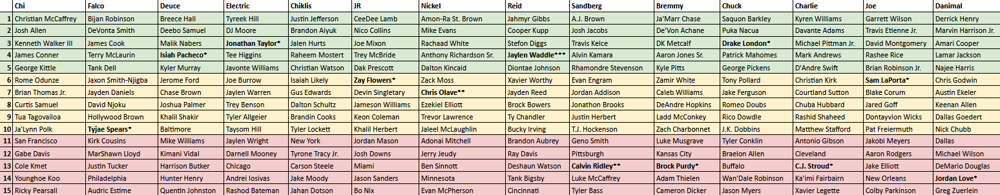

Draft of Manhands 2025
Friday, August 22, 7:30pm
Draft Order
- Joe
- Falco
- Bremmy
- JR
- Electric
- Nickel
- Chuck
- Deuce
- Reid
- Chiklis
- Sandberg
- Charlie
- Chi
- Danimal
2024 Draft (for Keeper Purposes)

Keeper Eligibility
Chi
Round 4: James Conner: eligible
Round 5: George Kittle: eligible
Round 6: Rome Odunze: eligible
Round 7: Brian Thomas Jr.: eligible
Round 8: Curtis Samuel: ineligible, drop on 09/22/2024, 10:11:05
Round 9: Tua Tagovailoa: eligible
Round 10: Ja'Lynn Polk: ineligible, drop on 09/15/2024, 09:47:05
Round 11: San Francisco: eligible
Round 12: Gabe Davis: ineligible, drop on 11/20/2024, 21:20:28
Round 13: Cole Kmet: ineligible, drop on 09/12/2024, 10:35:47
Round 14: Younghoe Koo: ineligible, drop on 12/15/2024, 16:25:21
Round 15: Ricky Pearsall: eligible
Falco
Round 4: Terry McLaurin: eligible
Round 5: Tank Dell: eligible
Round 6: Jaxon Smith-Njigba: eligible
Round 7: Jayden Daniels: eligible
Round 8: David Njoku: ineligible, drop on 09/11/2024, 09:49:45
Round 9: Hollywood Brown: ineligible, drop on 09/14/2024, 09:30:11
Round 10: Tyjae Spears (keeper year 1): ineligible, drop on 10/16/2024, 02:44:17
Round 11: Kirk Cousins: ineligible, drop on 10/23/2024, 02:46:32
Round 12: MarShawn Lloyd: ineligible, drop on 09/28/2024, 11:55:09
Round 13: Justin Tucker: ineligible, drop on 10/02/2024, 02:47:16
Round 14: Philadelphia: ineligible, drop on 09/14/2024, 09:59:52
Round 15: Audric Estime: ineligible, drop on 09/14/2024, 09:33:37
Deuce
Round 4: Isiah Pacheco (keeper year 1): eligible, traded from The Deuce Squad to Best of the lousiest on 09/10/2024, 02:13:01
Round 5: Kyler Murray: eligible, traded from The Deuce Squad to Team Deliciousness on 10/11/2024, 09:29:22
Round 6: Jerome Ford: ineligible, drop on 10/16/2024, 02:44:17
Round 7: Chase Brown: eligible
Round 8: Joshua Palmer: ineligible, drop on 09/18/2024, 06:23:36
Round 9: Khalil Shakir: eligible
Round 10: Baltimore: ineligible, drop on 11/13/2024, 02:48:46
Round 11: Mike Williams: ineligible, drop on 09/11/2024, 09:23:39
Round 12: Kimani Vidal: ineligible, drop on 09/12/2024, 15:55:09
Round 13: Harrison Butker: ineligible, drop on 11/14/2024, 16:54:04
Round 14: Hunter Henry: ineligible, drop on 09/11/2024, 02:17:51
Round 15: Quentin Johnston: ineligible, drop on 09/10/2024, 02:13:01
Electric
Round 3: Jonathan Taylor (keeper year 1): eligible
Round 4: Tee Higgins: eligible
Round 5: Javonte Williams: ineligible, drop on 11/13/2024, 02:48:46
Round 6: Joe Burrow: eligible
Round 7: Jaylen Warren: eligible
Round 8: Trey Benson: eligible
Round 9: Tyler Allgeier: eligible
Round 10: Taysom Hill: ineligible, drop on 09/22/2024, 11:57:03
Round 11: Jaylen Wright: eligible
Round 12: Darnell Mooney: ineligible, drop on 09/11/2024, 02:17:51
Round 13: Chicago: ineligible, drop on 10/19/2024, 11:45:40
Round 14: Andrei Iosivas: ineligible, drop on 09/22/2024, 08:18:35
Round 15: Rashod Bateman: ineligible, drop on 09/07/2024, 12:51:14
Chiklis
Round 4: Raheem Mostert: ineligible, drop on 12/08/2024, 10:24:33
Round 5: Christian Watson: ineligible, drop on 10/02/2024, 02:47:16
Round 6: Isaiah Likely: ineligible, drop on 12/11/2024, 02:53:36
Round 7: Gus Edwards: eligible
Round 8: Dalton Schultz: ineligible, drop on 10/16/2024, 02:44:17
Round 9: Brandin Cooks: ineligible, drop on 10/07/2024, 20:15:07
Round 10: Tyler Lockett: eligible
Round 11: New York: ineligible, drop on 10/30/2024, 02:45:52
Round 12: Tyrone Tracy Jr.: eligible, traded from Team Deliciousness to Team Jackal on 11/06/2024, 17:30:35
Round 13: Carson Steele: ineligible, drop on 09/11/2024, 02:17:51
Round 14: Jake Moody: ineligible, drop on 10/09/2024, 02:44:32
Round 15: Jahan Dotson: ineligible, drop on 09/18/2024, 06:23:36
JR
Round 4: Trey McBride: eligible
Round 5: Dak Prescott: ineligible, drop on 11/06/2024, 02:49:57
Round 6: Zay Flowers (keeper year 1): eligible
Round 7: Devin Singletary: eligible
Round 8: Jameson Williams: eligible
Round 9: Keon Coleman: ineligible, drop on 10/19/2024, 02:21:56
Round 10: Khalil Herbert: ineligible, drop on 09/12/2024, 08:49:33
Round 11: Jordan Mason: ineligible, drop on 11/21/2024, 09:32:36
Round 12: Josh Downs: ineligible, drop on 09/25/2024, 02:45:25
Round 13: Miami: ineligible, drop on 09/08/2024, 08:54:24
Round 14: Jason Sanders: ineligible, drop on 09/19/2024, 23:41:42
Round 15: Bo Nix: ineligible, drop on 09/21/2024, 02:20:05
Nickel
Round 4: Anthony Richardson Sr.: ineligible, drop on 10/30/2024, 02:45:52
Round 5: Dalton Kincaid: ineligible, drop on 12/20/2024, 20:25:04
Round 6: Zack Moss: ineligible, drop on 11/05/2024, 18:58:44
Round 7: Chris Olave (keeper year 2): eligible
Round 8: Ezekiel Elliott: ineligible, drop on 09/27/2024, 07:30:39
Round 9: Trevor Lawrence: ineligible, drop on 10/02/2024, 20:39:28
Round 10: Jaleel McLaughlin: ineligible, drop on 09/18/2024, 06:23:36
Round 11: Adonai Mitchell: ineligible, drop on 09/25/2024, 02:45:25
Round 12: Jerry Jeudy: ineligible, drop on 10/09/2024, 19:24:37
Round 13: Ben Sinnott: ineligible, drop on 09/18/2024, 06:23:36
Round 14: Minnesota: eligible
Round 15: Evan McPherson: ineligible, drop on 10/16/2024, 02:44:17
Reid
Round 4: Jaylen Waddle (keeper year 3): ineligible, already kept three years
Round 5: Diontae Johnson: ineligible, drop on 12/04/2024, 13:18:12
Round 6: Xavier Worthy: ineligible, drop on 11/06/2024, 17:21:38
Round 7: Jayden Reed: eligible
Round 8: Brock Bowers: eligible
Round 9: Ty Chandler: ineligible, drop on 10/16/2024, 07:12:35
Round 10: Bucky Irving: eligible
Round 11: Brandon Aubrey: ineligible, drop on 12/13/2024, 21:35:27
Round 12: Ray Davis: ineligible, drop on 10/12/2024, 12:00:55
Round 13: Deshaun Watson: ineligible, drop on 09/07/2024, 02:12:42
Round 14: Tank Bigsby: eligible
Round 15: Cincinnati: ineligible, drop on 09/11/2024, 02:17:51
Sandberg
Round 4: Alvin Kamara: eligible, traded from Best of the lousiest to Anaheim C. Pheasants on 09/18/2024, 06:23:35
Round 5: Rhamondre Stevenson: eligible, traded from Best of the lousiest to The Deuce Squad on 09/10/2024, 02:13:01; traded from The Deuce Squad to Team Deliciousness on 10/11/2024, 09:29:22
Round 6: Evan Engram: ineligible, drop on 10/06/2024, 11:49:19
Round 7: Jordan Addison: ineligible, drop on 09/22/2024, 07:42:46
Round 8: Jonathon Brooks: eligible
Round 9: Justin Herbert: ineligible, drop on 09/22/2024, 07:40:49
Round 10: T.J. Hockenson: eligible
Round 11: Geno Smith: ineligible, drop on 09/15/2024, 07:36:28
Round 12: Pittsburgh: eligible
Round 13: Calvin Ridley (keeper year 2): eligible
Round 14: Luke McCaffrey: ineligible, drop on 09/18/2024, 06:23:36
Round 15: Tyler Bass: ineligible, drop on 11/20/2024, 20:52:55
Bremmy
Round 4: Aaron Jones Sr.: eligible
Round 5: Kyle Pitts: eligible
Round 6: Zamir White: ineligible, drop on 10/09/2024, 23:06:52
Round 7: Caleb Williams: eligible
Round 8: DeAndre Hopkins: eligible
Round 9: Ladd McConkey: eligible
Round 10: Zach Charbonnet: eligible
Round 11: Luke Musgrave: ineligible, drop on 10/09/2024, 02:44:32
Round 12: Kansas City: eligible
Round 13: Brock Purdy (keeper year 1): eligible
Round 14: Adam Thielen: ineligible, drop on 09/25/2024, 17:38:54
Round 15: Cameron Dicker: ineligible, drop on 10/05/2024, 02:20:39
Chuck
Round 3: Drake London (keeper year 1): eligible
Round 4: Patrick Mahomes: eligible
Round 5: George Pickens: eligible
Round 6: Tony Pollard: eligible
Round 7: Jake Ferguson: eligible
Round 8: Romeo Doubs: eligible
Round 9: Rico Dowdle: eligible
Round 10: J.K. Dobbins: eligible
Round 11: Tyler Conklin: ineligible, drop on 11/21/2024, 21:04:48
Round 12: Braelon Allen: ineligible, drop on 10/10/2024, 12:48:10
Round 13: Buffalo: eligible
Round 14: Wan'Dale Robinson: ineligible, drop on 12/11/2024, 02:53:36
Round 15: Jason Myers: ineligible, drop on 11/07/2024, 11:31:08
Charlie
Round 4: Mark Andrews: eligible
Round 5: D'Andre Swift: eligible
Round 6: Christian Kirk: ineligible, drop on 10/31/2024, 13:20:03
Round 7: Courtland Sutton: eligible
Round 8: Chuba Hubbard: eligible
Round 9: Rashid Shaheed: ineligible, drop on 10/24/2024, 09:38:09
Round 10: Matthew Stafford: eligible
Round 11: Antonio Gibson: eligible
Round 12: Cleveland: ineligible, drop on 10/17/2024, 13:22:44
Round 13: C.J. Stroud (keeper year 1): eligible
Round 14: Ka'imi Fairbairn: ineligible, drop on 12/05/2024, 13:10:15
Round 15: Xavier Legette: eligible
Joe
Round 4: Rashee Rice: eligible
Round 5: Brian Robinson Jr.: eligible
Round 6: Sam LaPorta (keeper year 1): eligible
Round 7: Blake Corum: ineligible, drop on 09/21/2024, 21:04:49
Round 8: Jared Goff: ineligible, drop on 09/18/2024, 06:23:36
Round 9: Dontayvion Wicks: eligible
Round 10: Pat Freiermuth: eligible
Round 11: Jakobi Meyers: eligible
Round 12: Aaron Rodgers: eligible
Round 13: Jake Elliott: ineligible, drop on 10/06/2024, 10:55:30
Round 14: New Orleans: ineligible, drop on 10/26/2024, 02:19:41
Round 15: Colby Parkinson: ineligible, drop on 10/09/2024, 02:44:32
Danimal
Round 4: Lamar Jackson: eligible
Round 5: Najee Harris: ineligible, drop on 12/25/2024, 10:21:43
Round 6: Chris Godwin: ineligible, drop on 10/23/2024, 11:05:57
Round 7: Austin Ekeler: ineligible, drop on 12/04/2024, 03:06:10
Round 8: Keenan Allen: eligible
Round 9: Dallas Goedert: ineligible, drop on 12/08/2024, 00:24:59
Round 10: Nick Chubb: ineligible, drop on 12/18/2024, 02:46:34
Round 11: Dallas: ineligible, drop on 09/18/2024, 06:23:36
Round 12: Michael Wilson: ineligible, drop on 09/18/2024, 06:23:36
Round 13: DeMario Douglas: ineligible, drop on 09/11/2024, 09:21:29
Round 14: Jordan Love (keeper year 1): eligible
Round 15: Greg Zuerlein: ineligible, drop on 10/16/2024, 02:44:17